Fundamentos y usos prácticos de Docker
Clase 8 :
Composes Geniales
Temas de clase 8:
Composes Geniales
Awesome Compose
Awesome Compose
Docker Compose permite que tengamos aplicaciones complejas desplegadas en pocos minutos. A continuación se mostrarán algunos ejemplos y "composes" que sirven como punto de partida sobre cómo integrar diferentes servicios mediante un archivo Compose. No se recomienda su implementación en ambientes productivos críticos. *

Administración de contenedores
Portainer
Portainer es una interfaz gráfica web open source para la gestión de contenedores Docker, Docker Swarm, Kubernetes y otras plataformas de orquestación de contenedores. Portainer CE (Community Edition) es la versión gratuita sin soporte mantenido por la comunidad. Portainer dispone de una versión BE (Business Edition).
Portainer
- Portainer nos permite, entre otras cosas:
- Administrar contenedores, imágenes, volúmenes y redes.
- Soporte para múltiples nodos Docker
- Monitoreo en tiempo real de los recursos
- Una GUI intuitiva para crear, gestionar y monitorear contenedores

ZimaOS
ZimaOS es una solución de NAS que permite gestionar Docker de forma gráfica.
- Interface moderna y amigable
- Gestión básica de contenedores
- Instalación de contenedores con pocos clicks
- Panel de control para monitorear contenedores
- Antes conocido como CasaOS

Dockge
Dockge es un gestor de stacks de Docker Compose que prioriza la simplicidad y la edición directa del código YAML.
- Editor interactivo de
compose.yaml. - Terminal integrada para logs y despliegue en tiempo real.
- Conversor de comandos
docker runa YAML. - Ligero, reactivo y basado en la estructura de carpetas local.
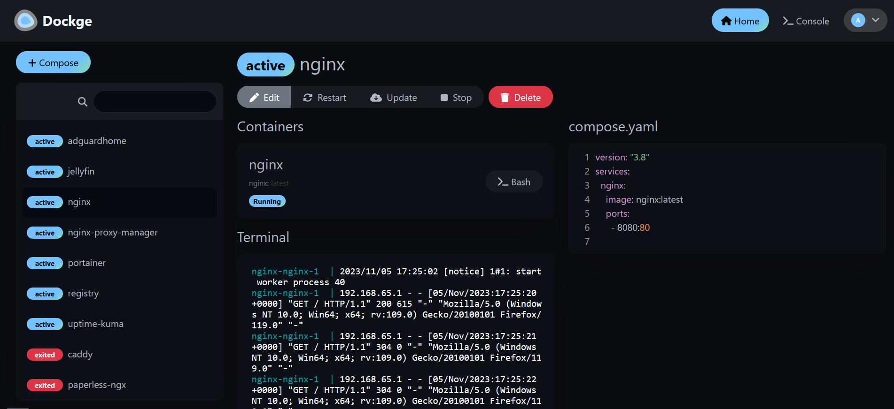
Dockge GitHub RepositoryComposes para desarrollo
code-server
code-server es un VSCode que corre en un servidor remoto accesible vía web.
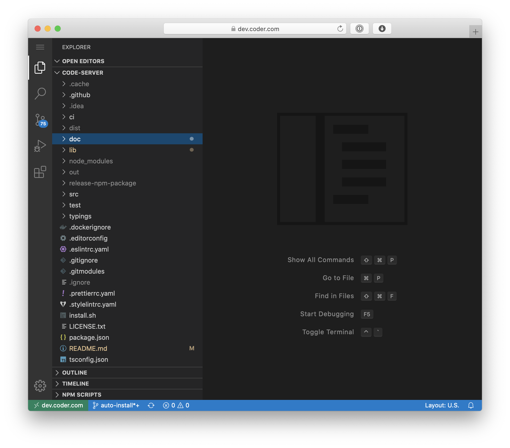
Gitea
Gitea plataforma de DevOps privada opensource (+1500 contrib) soporte empresarial opcional. Git, CI/CD, etc. Puede correr en Docker.
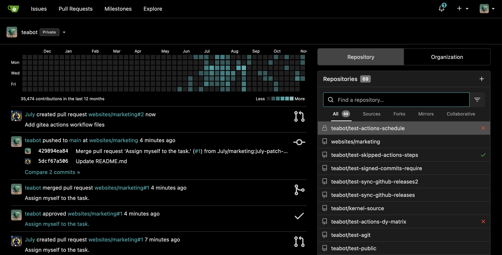
Forgejo
Forgejo es una plataforma de desarrollo de software "self-hosted" similar a GitHub, nacida como un fork de Gitea centrado en la libertad de software.
- Independencia: Comunidad 100% libre, sin intereses corporativos.
- Liviano: Ideal para correr en hardware modesto (HomeLabs/Raspberry Pi).
- Todo-en-uno: Gestión de issues, pull requests, wikis y registro de paquetes.
- CI/CD Integrado: Soporta acciones similares a las de GitHub para automatizar despliegues.
services:
forgejo:
image: codeberg.org/forgejo/forgejo:latest
container_name: forgejo
ports:
- "3000:3000"
- "222:22"
volumes:
- ./data:/data
restart: always
PostgreSQL | pgAdmin
PostgreSQL es una bases de datos relacional, conocido por ser muy robusto, potente y flexible. pgAdmin es una herramienta de administración con interfaz gráfica web para PostgreSQL.
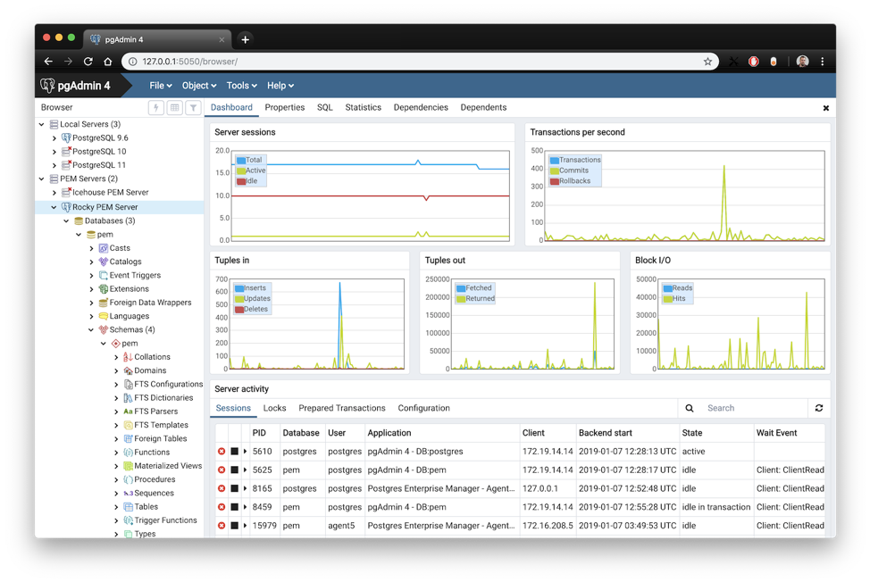
PostgreSQL + pgAdmin stack Compose Sample
Composes para Infra
Nginx Proxy Manager
Nginx Proxy Manager es un proxy reverso basado en Nginx. Con capacidad de generar certificados SSL/TLS con Let's Encrypt para exponer nuestras aplicaciones web de manera segura. Dispone de una amigable interfaz de usuario. Obviamene corre sobre Docker.
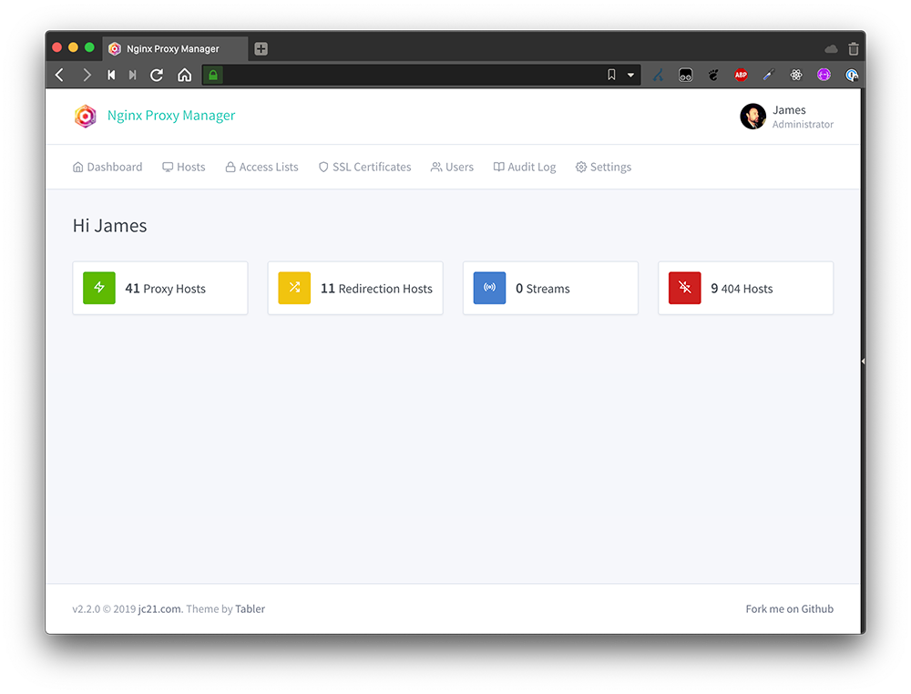
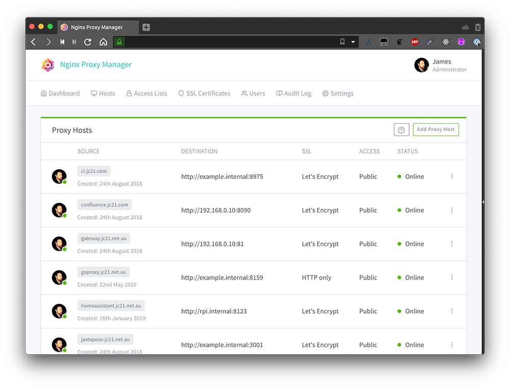
Nginx Proxy Manager Compose Sample
WireGuard/wg-Easy
WireGuard es una VPN simple, rápida y moderna para cifrar conexiones. Wireguard Easy, hace que sea mas simple aún de administrar esta VPN mediante una GUI web.
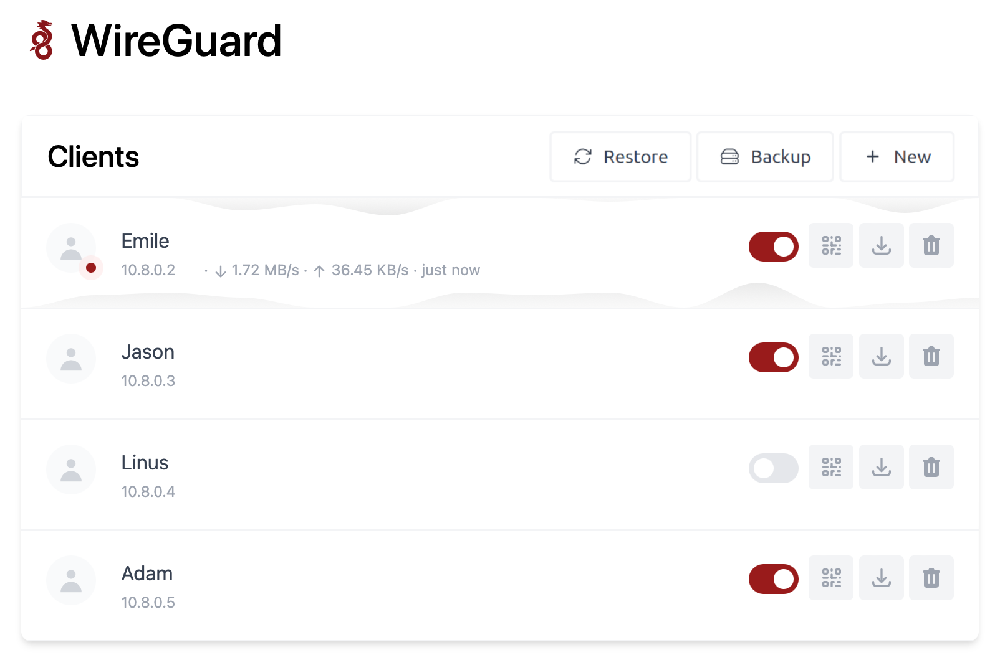
WireGuard Compose Sample | wg-easy Compose Sample
Nextcloud
Nextcloud es una plataforma open-source que permite a los usuarios almacenar, sincronizar y compartir archivos de manera segura en su propio servidor, proporcionando una alternativa privada a servicios en la nube como Google Drive o Dropbox. Ofrece características como edición colaborativa de documentos, mensajería y gestión de calendarios, todo bajo el control del usuario o de la organización.
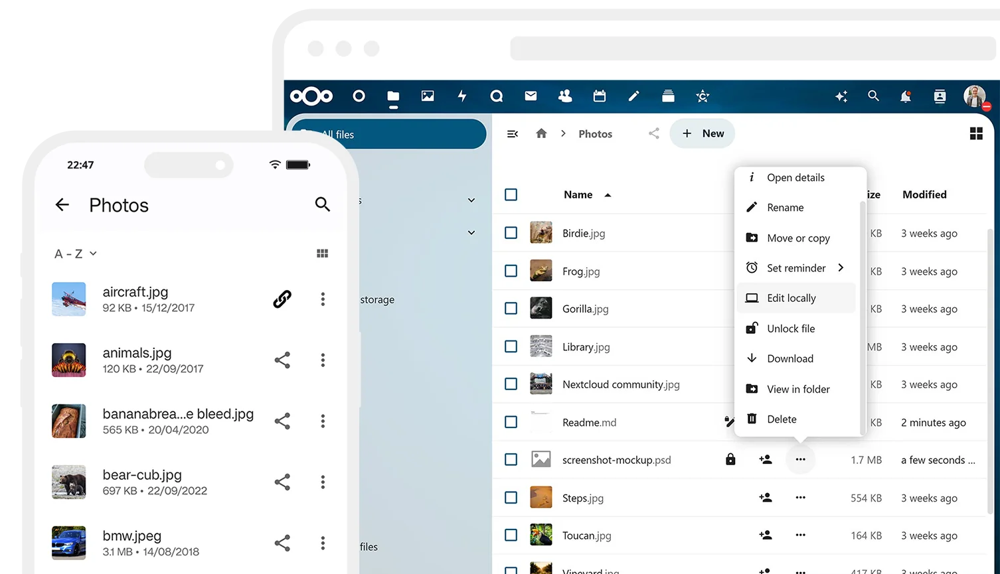
Nextcloud Compose Sample
Uptime Kuma
Uptime Kuma es una herramienta de monitoreo auto-alojada fácil de usar que permite vigilar la disponibilidad de tus servicios en tiempo real.
- Monitoreo de HTTP(s), Ping, DNS, Steam Game Servers, etc.
- Notificaciones vía Telegram, Discord, Gotify, Slack y más de 90 servicios.
- Páginas de estado (Status Pages) públicas y personalizables.
- Gráficos de tiempos de respuesta e historial de incidentes.

Vaultwarden
Vaultwarden es una alternativa compatible a Bitwarden open source escrita en Rust para gestionar nuestras contraseñas y secretos. Deployable en Docker.
Requiere de certificados SSL para funcionar.
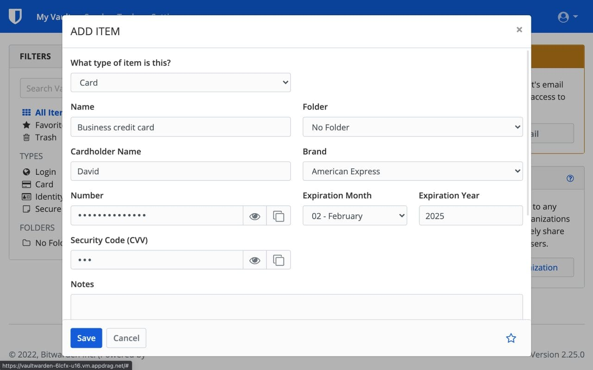
Vaultwarden Compose Sample
Composes para HomeLab
immich
immich es "un clon" self-hosted de Google Photos open source con mas de 700 desarrolladores.
Dispone de una demo online. User: demo@immich.app | pass: demo
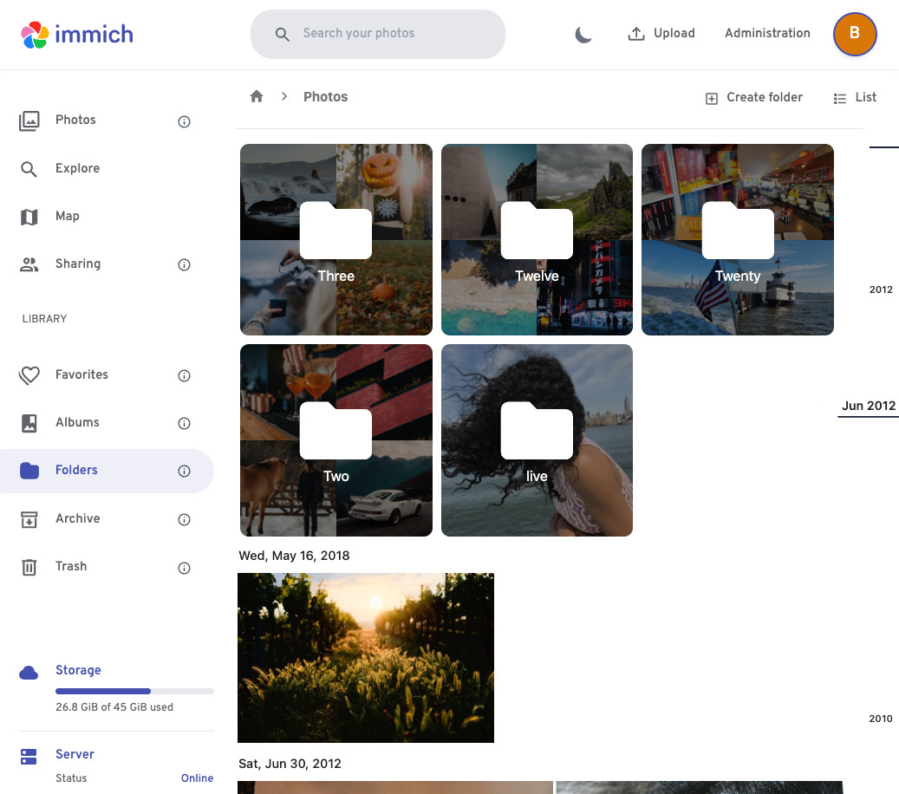
immich Compose Sample
pi-hole
Pi-Hole se define como un "agujero negro" para los anuncios de internet. Es un Ad block por DNS. Es deployable vía Docker Compose pero requiere cierta configuración básica en el DHCP de la red; asignar como DNS la IP que tendrá el Pi-Hole.

Pi-Hole Compose Sample
Adguard Home
Adguard es una alternativa a Pi-Hole.

Adguard Compose Sample
Home Assistant
Home Assistant es domótica de código abierto que prioriza el control local y la privacidad. Impulsado por una gran comunidad de entusiastas DIY. Ideal para correr sobre una Raspberry Pi o un server local.
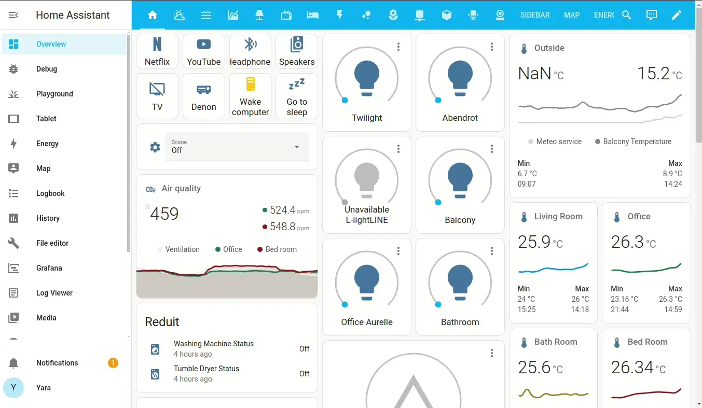
Home Assistant Compose Sample
Plex Media Server
Plex es una aplicación que permite a los usuarios organizar, gestionar y transmitir su colección de medios digitales, como películas, música, fotos y programas de televisión, a través de diferentes dispositivos conectados a la red.
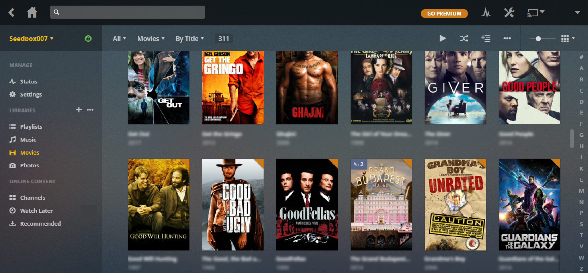
Plex Compose Sample
Jellyfin
Jellyfin es un servidor de medios de software libre que te permite tomar el control de tu contenido multimedia (películas, series, música) sin rastreadores ni licencias ocultas.
- 100% Open Source: A diferencia de Plex o Emby, no tiene funciones bloqueadas tras un pago.
- Privacidad: No hay recolección de datos ni telemetría en tus servidores.
- Transcodificación: Soporta aceleración por hardware (Intel QuickSync, NVENC) en contenedores.
- Multiplataforma: Clientes para Android TV, Web, iOS, Roku y Kodi.
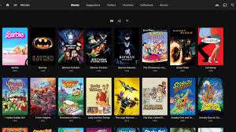
Actividad de práctica:
- Lab 8 Awesome Compose